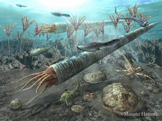
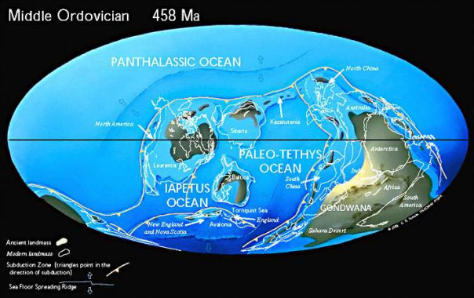

The Ordovician Period is known for significant events like plate collisions, and the second largest mass extinction at the end of the period.
Life Forms during this Period
Expansion of marine life; first appearance of coral reefs and jawless fish. The 1st animals with bones appear, though dominant animals are still trilobites, brachiopods, and corals

Geological Features during this Period
High sea levels; widespread shallow continental seas. A very cold time in Earth's history; there was a great extinction due to ice caps in present-day Africa. The four main continents during this period were: Gondwana, Baltica, Siberia and Laurentia.
